Element Style animation for Button1 with Boolean reference Cmd, Intensity4 style for True/On state, and Intensity2 for False/Off state (unchecked)
Module 3 — Symbols | Pages 223–248
5.
In Default Value, enter Me.Cmd.
6.
In Description, enter Command for button.
7.
Add another custom property and name it CmdOffMsg.
8.
In the Data Type drop-down list, select String.
Notice the icon at the top updates to show the String data type. Additionally, the toggle button
to the left of the Default Value field is enabled and set to ‘Static Text’ mode.
9.
Click the toggle button to switch to Expression or Reference mode.
Notice a warning icon appears at the top and the Default Value field is outlined in red. These
indicate that a default value must be added.
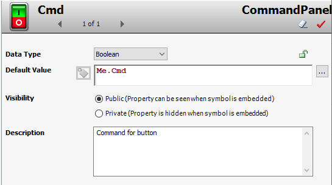
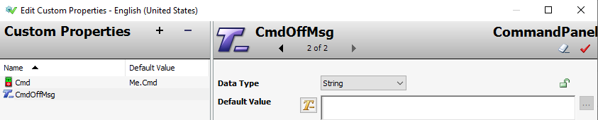
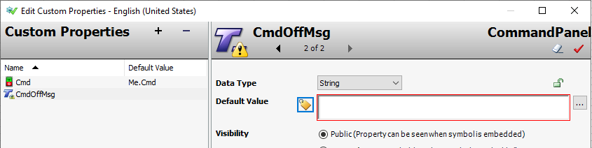
10. In Default Value, enter Me.Cmd.OffMsg.
11. In Description, enter Button caption.
12. Add another custom property and name it CmdOnMsg.
13. In the Data Type drop-down list, select String.
14. In Default Value, switch to Expression or Reference mode and enter Me.Cmd.OnMsg.
15. In Description, enter Button caption.
16. Click OK to close Edit Custom Properties.
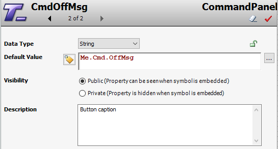
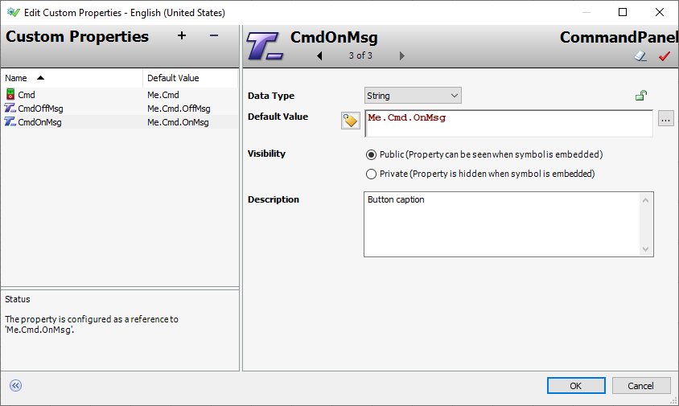
You will now add a button to the graphic.
17. In Tools, click the Button tool.
18. On the canvas, click and drag diagonally to draw a button.
19. Enter the button text as Open and press Enter.
20. Configure the properties for the button as follows:
On the canvas, the button updates to reflect the changes you made to the properties.
Your button should look as follows:
ElementStyle:
Intensity2
Width:
100
Height:
40
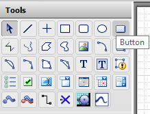
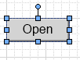
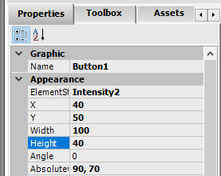
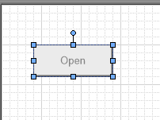
Next, you will add animations to the button.
21. On the canvas, double-click the button and add a Pushbutton animation.
22. Configure the animation as follows:
23. Add a Value Display animation.
24. Configure the animation as follows:
States:
Boolean
Reference:
Cmd
Action:
Set
States:
String
Expression Or Reference:
CmdOnMsg
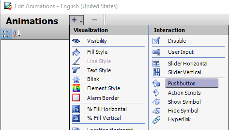
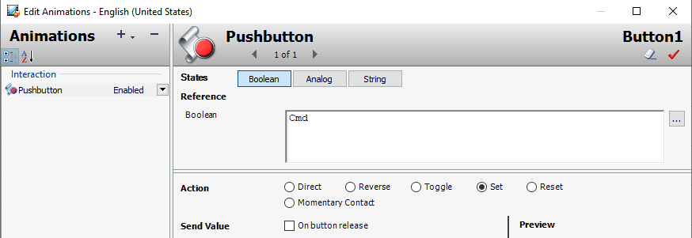
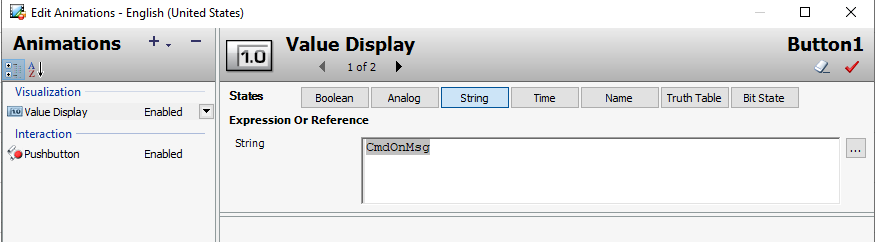
25. Add an Element Style animation.
26. Configure the animation as follows:
Note:
For this button, False, 0, Off is unchecked. This will use the default element style
property of the button. The default is shown on the right side of Edit Animations.
27. Click OK to close Edit Animations.
States:
Boolean
Reference:
Cmd
Values True, 1, On:
Element Style checked (default)
Intensity4 selected
Values False, 0, Off:
Element Style unchecked
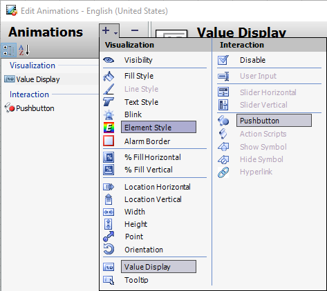
Next, you will duplicate the button and configure its properties and modify its animations.
28. On the canvas, right-click the button and select Duplicate.
29. Place the duplicate button to the right of the original button.
30. On the Properties tab, modify the Text property to Close.
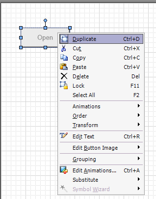
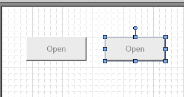
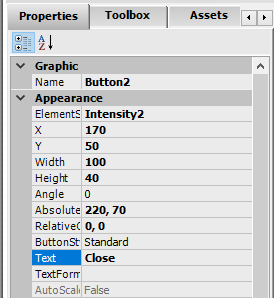
The button text is updated on the canvas.
31. Double-click the Close button to edit the animations.
32. For the Element Style animation, in Expression Or Reference, enter not Cmd.
Note:
Using not for the reference reverses the element style values used in the animation.
This technique saves time when configuring the animation.
33. For the Value Display animation, in Expression Or Reference, enter CmdOffMsg.
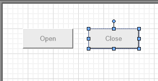
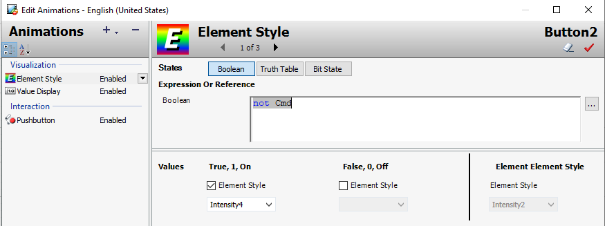
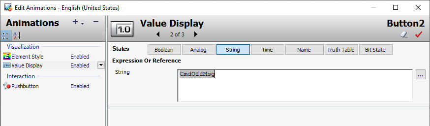
34. For the Pushbutton animation, select Reset.
35. Click OK to close Edit Animations.
In the following steps, you will add a status element to the graphic to display quality and status
information at runtime.
36. In Tools, click Status.
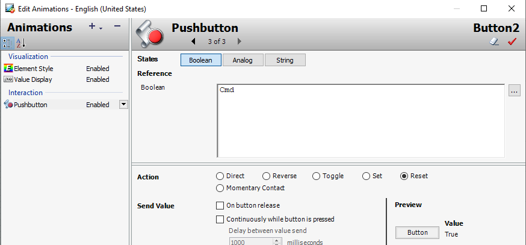
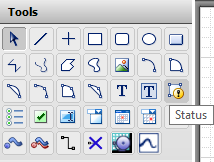
37. On the canvas, click and drag a small rectangle between the two buttons as shown below.
Edit Animations appears.
38. On the Graphics tab, in the Available Graphic Elements list, select Button1, and then click
the >> button to move it to the Selected Graphic Elements list.
Button1 moves to the Selected Graphic Elements list.
39. Select Button2 and click the >> button to move it to the Selected Graphic Elements list.
40. Click OK to close Edit Animations.
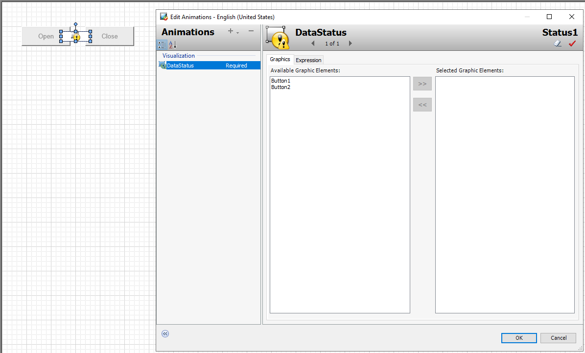
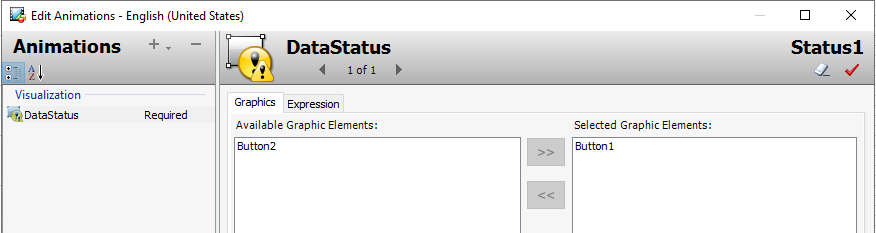
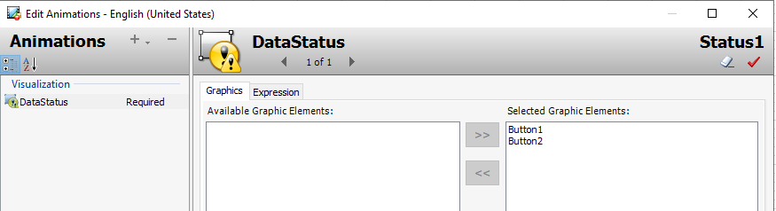
Now, you will set the size of the canvas to Fixed and configure the width and height.
41. Click the canvas to set focus on the canvas.
42. Configure the properties as follows:
The canvas is now smaller.
43. Save and close and check in the graphic.
Size:
Fixed
FixedWidth:
320
FixedHeight:
230
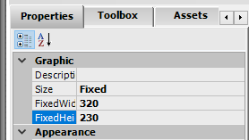
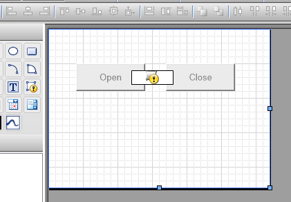
Create a Speed Setpoint Command Panel
Next, you will duplicate CommandPanel and add a numerical graphic for displaying and changing
the speed setpoint of the agitator.
44. On the Graphics tab, in the Training toolset, duplicate CommandPanel.
45. Name the duplicate symbol as CommandPanelwithSetpoint and then open it for editing.
46. On the Toolbox tab, search for numerical.
47. Drag SA_NumericalEntry to the canvas and place it below the buttons.
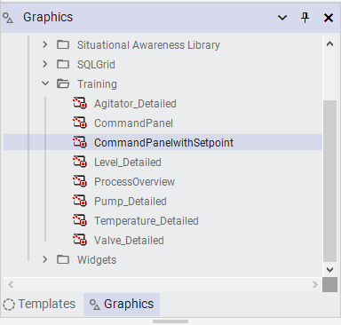
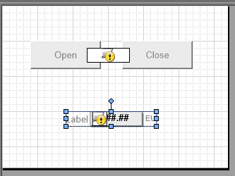
48. Configure wizard options as follows:
49. On the canvas, right-click SA_NumericalEntry1 and select Substitute | Substitute
References.
Substitute Reference appears.
LabelType:
CustomPropertyLabel
EngUnitsType:
CustomPropertyLabel
Outline:
False
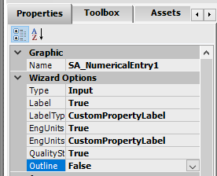
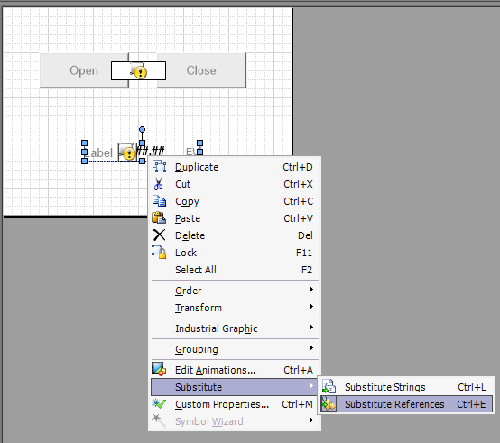
50. Use Find & Replace to change all Me.PV references to Me.Speed.SP references.
Your references should appear as follows:
51. Click OK to close Substitute Reference.
52. On the canvas, right-click SA_NumericalEntry1 and select Custom Properties.
53. In Custom Properties, select the Label property.
54. In Default Value, switch to Expression Or Reference mode and enter
Me.Speed.SP.Description.
55. Click OK to close Edit Custom Properties.
56. Save and close and check in the graphic.
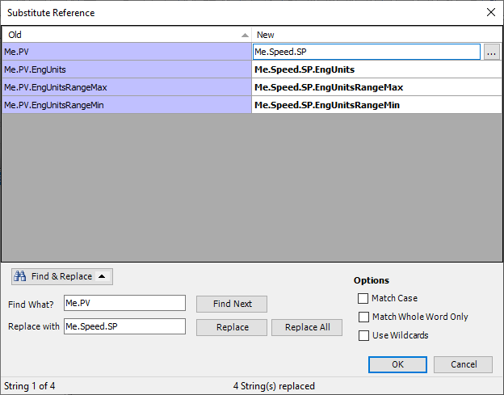
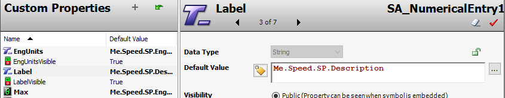
Configure Graphics to Show Command Panels
Now, you will add a Show Symbol interaction animation to the agitator, pumps, and valves. To
accomplish this, you will first add this animation to one graphic and then copy and paste it to the
others.
57. On the Graphics tab, in the Training toolset, double-click Agitator_Detailed to edit it.
58. On the canvas, select the Agitator graphic, and then on the Properties tab, scroll down to
Runtime Behavior and set the TreatAsIcon property to True.
Setting TreatAsIcon to True enables interaction animations for an embedded graphic.
Enabling this property is required before adding a Show Symbol animation to the Agitator.
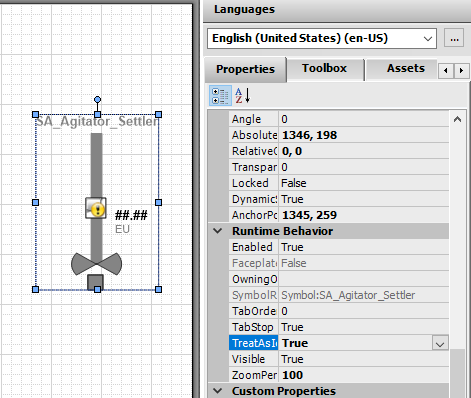
59. On the canvas, double-click the Agitator graphic and add a Show Symbol animation.
Edit Animations appears.

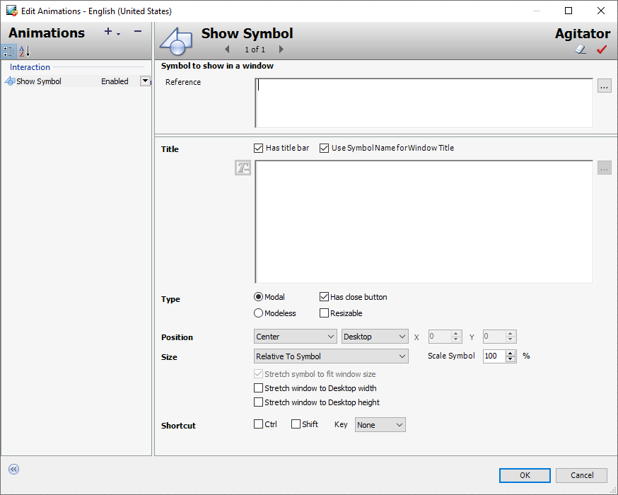
60. To the right of the Reference field, click Browse Galaxy, and then from the Graphic Toolbox,
select Training and select CommandPanelwithSetpoint.
61. Click OK to close the Galaxy Browser.
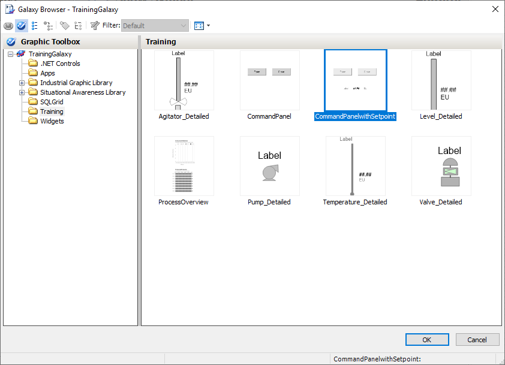
62. In Title, uncheck Use Symbol Name for Window Title.
63. Switch to Expression Or Reference mode and enter OwningObject.
64. In the Position drop-down lists, select Below and Parent Symbol.
Your configuration will appear as follows:
65. Click OK to close Edit Animations.

66. On the canvas, right-click the Agitator graphic and select Animations | Copy.
67. Save and close and check in the graphic.
Next, you will configure the pumps and valves.
68. On the Graphics tab, double-click Pump_Detailed to edit it.
69. Select the Pump symbol, and on the Properties tab, set the TreatAsIcon property to True.
70. On the canvas, right-click the Pump graphic and select Animations | Paste.
71. On the canvas, double-click the Pump graphic.
72. In Edit Animations, in Reference, enter CommandPanel.
73. Click OK to close Edit Animations.
74. On the canvas, right-click the Pump graphic and select Animations | Copy.
75. Save and close and check in the graphic.
76. On the Graphics tab, double-click Valve_Detailed to edit it.
77. Select the Valve symbol, and on the Properties tab, set the TreatAsIcon property to True
78. On the canvas, right-click the Valve graphic and select Animations | Paste.
79. Save and close and check in the graphic.
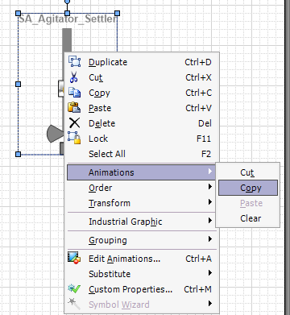
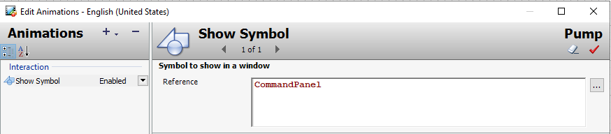
Test in Runtime
Finally, you will click on a valve, pump, and agitator to use their command panels.
80. In WindowMaker, click Runtime.
81. Click Inlet1_001 to view its command panel.
The title for the command panel is Inlet1_001, and the text on the buttons is Open and Close.
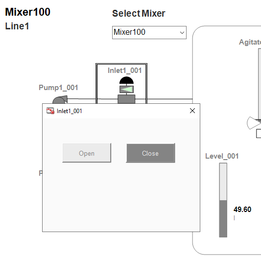
82. In the command panel, identify the button that appears lighter (element style Intensity2) than
the other and click it to command the valve.
The following example shows the Open button as lighter than the other.
Note:
The simulated mixer process used in this course does not link the .Cmd attribute of
motors and valves with their .PV attributes. Therefore, the command panel’s buttons do not
show the current state of the equipment. Instead, the buttons only reflect the user’s
interactions. Once the user issues a command, the data simulator performs an override to the
automated process.
83. Click Open and Close to operate and watch the valve transition.
84. Observe the Quality & Status indicator shows an hourglass icon in the command panel briefly
between each command.
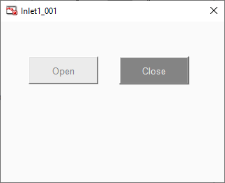
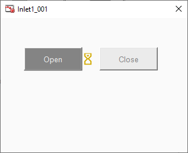
85. At the top of the Inlet1_001 command panel, click the X to close it.
Note:
If you do not click X, you will not be able to perform any other functions in
WindowViewer.
86. Click Pump1_001 to view its command panel.
The title of the command panel is Pump1_001 and the text on the buttons is Start and Stop.
87. Click Start and Stop to operate the pump and watch the results.
Important: To ensure automatic operation of the simulator, click Start or Stop to make the pump’s
state the same state as its associated valve. When the pump and valve are in the same state, the
level in the tank will move. For example, if Inlet 1 is active, then Pump 1 must also be active.
88. At the top of the command panel, click the X to close it.
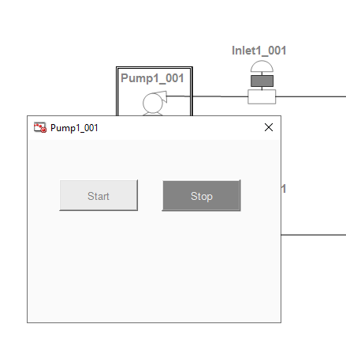
89. Click Agitator_001 to view its command panel.
In addition to the Start and Stop buttons, the Speed setpoint graphic appears on the
command panel.
90. In Speed setpoint, click the number and enter 45, and then press Enter.
The Status & Quality hourglass icon appears briefly after pressing Enter.
91. At the top of the command panel, click the X to close it.
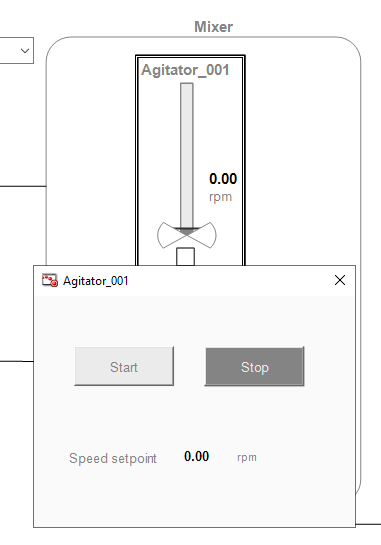
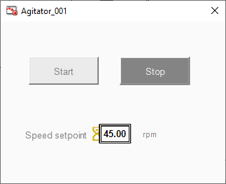
92. When the agitator is running, verify the new agitator speed setpoint.
93. Click Development! to return to WindowMaker.
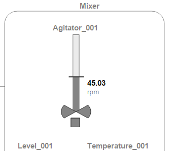
Overview of the Scripting Environment
You can write scripts to monitor and manage aspects of your InTouch applications. A script is a set
of programmatic instructions that directs an InTouch application to perform an action. You write
InTouch scripts with the QuickScript language. Using QuickScript, you can write scripts that
include conditional branching, code looping, and local variables.
Scripts can be classified by when they are run and whether they run independently of other
ongoing application processes. Scripts can generally be run in two different ways:
Event-based scripts run once when an event occurs. For example, an event-based script
can run after an operator presses a key or a tag value changes.
Time-based scripts run periodically while a condition is fulfilled. For example, a time-based
script can run while a window is open or a button is kept pressed.
You can configure multiple event-based and time-based scripts to run with the same trigger. For
example, you can configure a script to run once when a key is pressed and another script to run
periodically every 5 seconds while the same key remains pressed.
For condition scripts, you can either run a script synchronously or asynchronously:
When a synchronous script runs, all InTouch animation and tag value updating stops.
Then, animation and tag value updating resumes after the script stops.
When an asynchronous script runs, all InTouch animation and tag value updating
continues during the period when the script runs.
You can write scripts to extend and customize your objects. You can write scripts that run
commands and logical operations, based on specified criteria being met. For example, a script
starts when a key is pressed, a window is opened, or the value of an attribute changes.
Using scripts, you can create a variety of customized and automated system functions. A script
adds behavior that runs when the object that contains the script is deployed and the object is
either:
On scan in the runtime environment; or
Changes scan or start/shutdown state
A script typically runs based on attributes of the object that contains it, but can be started by
another script based on changing values of attributes of more than one object.
When a script condition is true, the script runs at least once immediately. The maximum length of a
script trigger period is 49 days. A script never runs if the trigger period exceeds 49 days.
The following characteristics apply to the scripting environment:
Script text has no length limitations.
Selecting a script function from the Script Function Library dialog box adds it and its
syntax to the script text where you can edit it.
You can save a script with syntax errors, but the object cannot be deployed until you
correct the script syntax errors.
You can validate your scripts before using them. This helps you avoid syntactically correct
but semantically incorrect combinations, such as two statements declaring the same
variable. Variables can be declared only one time in a single block.
This section provides a brief overview of the scripting environment, explains execution types and
triggers, and introduces ShowGraphic functions.
You can change the name of a script at any time by renaming it in the Object Editor.
In the runtime environment, a script execution error stops the script’s current execution.
Script execution is retried on the next AppEngine scan.
You can use the InTouch scripting language, QuickScript, to build more robust applications. There
are seven types of scripts and many built-in script functions available. The seven types of scripts
are defined by what causes them to run. For example, application scripts run when an application
starts, stops, or continues running. Data change scripts run when a certain item of data changes.
Window scripts run when a window opens, closes, or remains open.
The built-in script functions include mathematical functions, trigonometric functions, string
functions, and others. Using these functions saves you time in developing your application.
InTouch scripts can include Object Linking and Embedding (OLE) objects and ActiveX controls.
You can use conditional statements, loops, and local variables in the scripting language to create
complex effects in your application. Before you start scripting, you should understand:
A script is a set of instructions that direct an application to do something.
QuickScript is the InTouch HMI scripting language.
A function is a script that can be called by another script. The InTouch HMI comes with a
set of predefined functions for your use.
QuickFunctions are reusable functions written in QuickScript and stored in the
QuickFunction library. To create a QuickFunction, you simply create a QuickScript and
name it. A QuickFunction can be called by another script or from animation link
expressions.
Types of Scripts
In InTouch, scripts are categorized based on what causes the script to run. For example, you
would create a “key script” if you want a script to run when the operator presses a certain key on
the keyboard.
After you have chosen the script type, you can then further define the criteria, or conditions, that
make the script run. For example, you might want the script to run when the key is released, not
when the key is pressed.
The script types are:
Application scripts, which run either continuously while WindowViewer is running or one
time when WindowViewer is started or shut down.
Window scripts, which run periodically when an InTouch window is open or one time when
an InTouch window is opened or closed.
Key scripts, which run one time or periodically when a certain key or key combination is
pressed or released.
Condition scripts, which run one time or periodically when a certain condition is fulfilled or
not fulfilled.
Data change scripts, which run one time when the value of a certain tag or expression
changes.
Action scripts, which run one time or periodically when an operator clicks on an InTouch
HMI graphic object.
ActiveX event scripts, which run one time when an ActiveX event occurs, such as clicking
an ActiveX control.
Review the sections above for the main topics, step-by-step procedures, and important configuration details.
This is part of the InTouch HMI layer, which integrates with Application Server's Galaxy for a complete visualization solution.
Module 3 — Symbols. AVEVA InTouch for System Platform 2023 Training.
Next: Lesson L20 — Scripts in Graphics